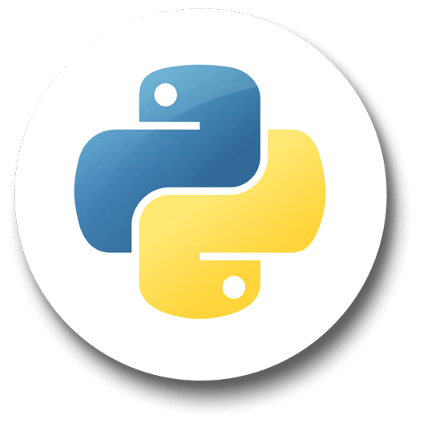
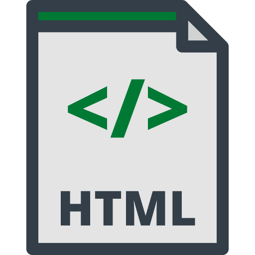

:)
My Resume
Download PDFTechnical Skills
- Java

-
Python

- scikit-learn
- pandas
- matplotlib
- JavaScript
- HTML/CSS

- PostgreSQL
- GitHub

- Object-Oriented Programming
- Artificial Intelligence & LLMs
- Prompt Engineering
- AI-Assisted Development Workflows
- Data Analysis & Mining
- Algorithm Design
- Agile Development
- User-Centered Design
- Relational Database Design
- ERD Modeling & Normalization
- Cybersecurity Fundamentals
- Information Security Principles
- Code & Design Documentation
- Teamwork / Project Management
Employment
W&J IT Governance Task Force Member
Aug 2025 – April 2026
- Participate in meetings with Board of Trustees, faculty, and alumni to discuss institutional technology policies.
- Represent student perspectives on data privacy, digital security, and technology usage.
Peer Assisted Learning (PAL) Tutor - Washington & Jefferson College
August 2024 - Present
- Identified by CIS professors to assist fellow students in understanding coding concepts and material.
- Tutor over 50 students throughout the semester to improve their coding skills.
- Review and debug code, providing clear explanations and best practices.
Lead Instructor, Assistant Instructor - BlackRocket
Summers 2024-26
- Instructed over 150 children (ages 6-15) in coding courses such as Minecraft Designers and Roblox Coders.
- Adapted content to engage and educate participants in various programming environments.
Education
Washington & Jefferson College
- Major: Computing & Information Studies (CIS)
- Minor: Business Administration
- GPA: 3.867
- Relevant Courses:
- CIS 400: Service Learning Project Mgt.
- CIS 335: Information Security
- CIS 320: Data Structures
- CIS 323: Systems Analysis
- CIS 220: Object-Oriented Programming
- CIS 310: Systems Analysis
- CIS 241: Intro to Data Mining
- CIS 343: Advanced Data Analysis: Simulations
- CIS 112: Database Concepts
- CIS 275: Web Design and Development
Achievements:
- Honor Societies: Phi Beta Kappa, Alpha Lambda Delta, Gamma Sigma Alpha
- CIS Steinberg Scholarship Recipient
- Dean's List (7/7 semesters)
- Alpha Scholar
- Spring PAC Academic Honor Roll
- PAC Sportsmanship Team (2024)
Extracurricular Experience
- Softball College Athlete, Washington and Jefferson College
- Kappa Alpha Theta Sorority Member
- Varsity Softball Captain & Varsity Indoor Track, Marriotts Ridge High School
- Travel Softball Player, Howard County Youth Programs